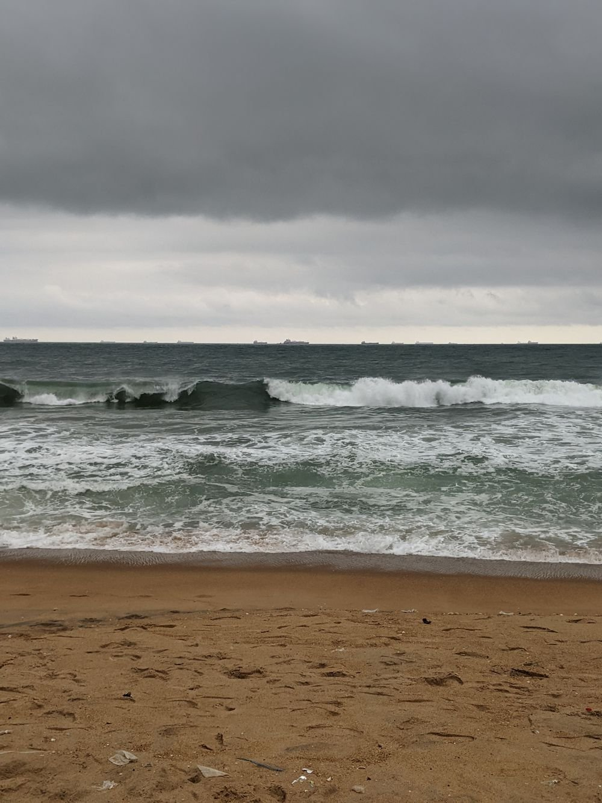
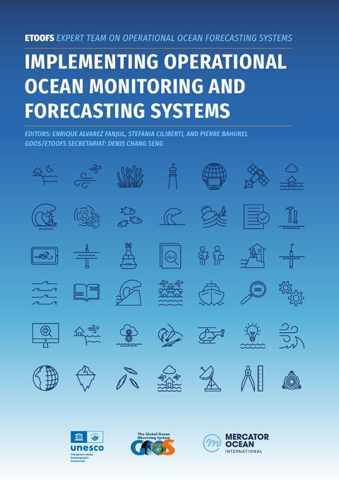
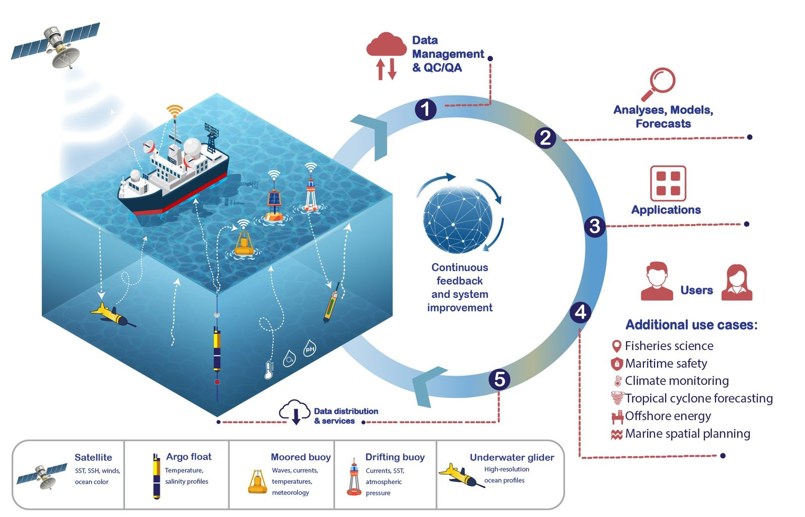
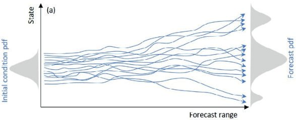

Learn
Four interactive modules about forecasting, decisions, warnings and a knowledge check.

Discover how a forecast is made, how it is used on the coast, and test what you know. Explore learning modules, official forecast services and seven days of decision challenges, built from the OPERA Ocean Literacy factsheets.
Four interactive modules about forecasting, decisions, warnings and a knowledge check.
Read seven-day forecast bulletins, make choices, watch consequences and earn points.
Discover official ocean and marine forecasting services.
Kalk Bay, South Africa. Photo: Chesney Bradshaw / Pexels
Each module takes a few minutes. Your progress is kept in this browser only.
The OceanPrediction Resource Center gathers ocean literacy materials, videos, infographics and technical guidance. These links open the official website.

Educational videos, illustrations and explanations about the ocean and ocean forecasting.
Browse Ocean Literacy resources ↗ Waves at Lomé, Togo. Photo: Moise Barten / Pexels
Implementing Operational Ocean Monitoring and Forecasting Systems
The reference guide behind this page: how operational forecasting systems are built and run. IOC UNESCO, GOOS 275 (2022).
Five linked steps turn measurements of the ocean into information people can act on. Tap a circle on the picture, or a step beside it.

An operational ocean forecasting system. Credit: European Union, Copernicus Marine Service Data (2026), © Mercator Ocean.
Here are five examples from the OPERA factsheet Ocean forecasting in action. Choose a sector, see the forecasts it needs, decide what you would do, then read what really happened.
Content and sources: OPERA factsheet OL-027, Ocean forecasting in action. Each case keeps its own source line.
Six messages reach the coast. Put each one in the right box: a forecast (a number about the future), a warning (a call to act) or a service (information shaped for a user). Drag a card onto a box, or tap the card and then the box.
Slide from the past to the days ahead. The same model, run three ways.

Ensemble forecasts start from slightly different initial conditions and diverge with time; the spread gives an indication of the forecast uncertainty. Source: ETOOFS Guide (IOC UNESCO, 2022), Figure 5.10, via OL-013.
Texts: OPERA factsheets OL-009, OL-013, OL-025, OL-027 and OL-033.
Four short quizzes. Pick one answer per question; the explanation appears at once. Nothing is stored beyond your browser.
The texts of this page come from the OPERA Ocean Literacy factsheets, available on the Ocean Prediction DCC resource centre.
Links checked on 9 November 2026. Each service belongs to its operator; OPERA does not issue forecasts or warnings. In a real emergency, follow official local warnings and instructions.
Read an illustrative forecast bulletin, choose your response and discover the consequences. All seven missions count toward a total of 100 points. You can retry any mission. Forecast numbers are fictional training examples, not live warnings.
This interactive activity has been developed as part of the OPERA Capacity Development Activities led by the CIPMA UNESCO Chair (Université d'Abomey Calavi, Benin) and the Gulf of Guinea Ocean Sciences Summer School (GGOSSS). OPERA (Ocean Prediction Enhancement in Regions of Africa) is a five year project implemented by Mercator Ocean International with funding from the European Union as part of the ArcX programme.
All texts are taken from the OPERA Ocean Literacy factsheets. Concept of the decision scenarios: OPERA Ocean Explorer prototype. Figure: European Union, Copernicus Marine Service Data (2026), © Mercator Ocean. Cover of the ETOOFS Guide: IOC UNESCO, GOOS 275 (2022).
Photos, under the Pexels licence unless stated: Kalk Bay, Chesney Bradshaw; the port of Durban, Ojas Narappanawar; Benguela coast, Daniel Mulela; Lomé, Moise Barten; Kilifi coral, Nirav Shah; Togo beach, Barnabas Lartey-Odoi Tetteh; data buoy, Arnauld van Wambeke. MV Wakashio: IMO, CC BY 2.0. Cyclone Idai: INGC. Aného: World Bank, Nathan Ochole.
This activity counts visits and clicks anonymously to improve the material. No personal data is collected. Licence CC BY 4.0. Version 1.3 beta (V5), November 2026.
Anonymous counters. Only visible with #stats in the address.